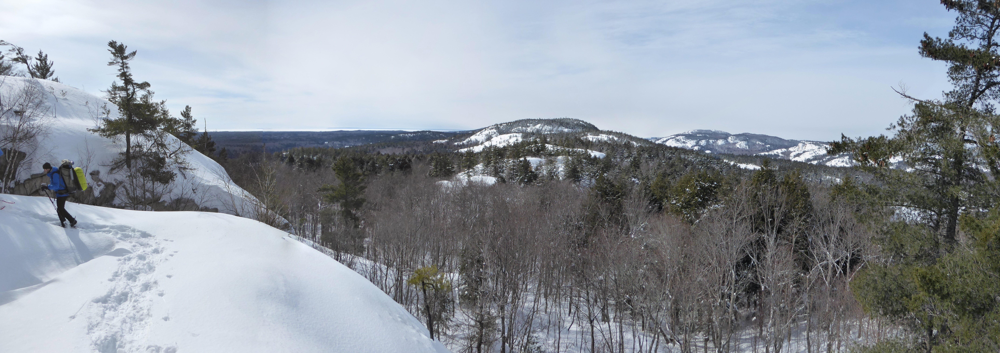

Some things that I enjoy outside of math:

Day 2 of a winter camping and snowshoeing trip in Killarney Provincial Park. We received the McGill Outdoors Club (MOC) Adventure Grant for this trip, and gave a presentation. On the left side of this picture is my academic twin, David Ter-Borch Gram Lilienfeldt.Favourite fishing spot, at an undisclosed location in Nova ScotiaOne of my favourite cloud photos (I have been a member of the Cloud Appreciation Society since 2007)Part of my used book collection focused on (original) Hardy Boys, Jules Verne, and Ted ScottIn high school I was a glider pilot, and received a certificate for a 5 hour flight